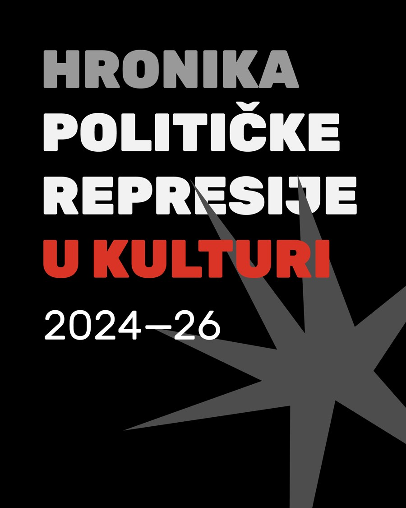

Hronike
Dokumentujući slučajeve političke odmazde, preuzimamo ulogu kolektivnih svedoka, da ti slučajevi ne budu prećutani ni zaboravljeni, već da grade solidarnost i međusobnu podršku. Vodimo dve hronike: represije i otpora.

Hronika represije u kulturi
Hroniku smo pokrenuli u novembru 2025, da umetnice, umetnici i radnici u kulturi ne bi ostali prepušteni pojedinačnim borbama. Upitnik prikuplja svedočanstva o zastrašivanju, pretnjama, otkazima, cenzuri i uskraćivanju finansiranja ili prava na rad.
37
prijava manje poznatih slučajeva
9
gradova u Srbiji
30
dana prikupljanja, 15. 11. – 15. 12. 2025.
Izveštaji
- Mapiranje slučajeva političke represije u kulturi tokom 2025. godinePDF
- Chronicle of Repression in Culture, Serbia 2025 – SummaryPDF
Šta je u izveštaju
- Kontekst Hronike represije
- Represija u devet gradova
- Direktna represija u svim sektorima
- Dominantni oblici represije
- Finansijski pritisci i javni konkursi
- Smene, otkazi, mobing
- Cenzura
- Drugi oblici represije
- Posledice represije
- Otpor je moguć

Hronika otpora u kulturi i umetničkom obrazovanju
Poziv za prikupljanje slučajeva otpora i solidarnosti. Beležimo kako se umetnici, studenti, nastavnici i radnici u kulturi suprotstavljaju pritiscima: obustave rada, podrška studentskim blokadama, odbijanje učešća ili radnog naloga.
Nije potreban formalan ni stručan tekst. Ako postoji prepreka, nije neophodno navoditi imena.
Pošalji slučaj otporaUpitnik pita
- naziv akcije
- gde i kada se dešavala
- šta je bio povod
- šta se dogodilo
- ko je učestvovao
- oblici delovanja
- šta se htelo postići
- reakcija okruženja
- pritisci i posledice
Iz hronike
- 22. jul 2025.Protest za slobodni SKC, ispred SKC-a
- 11. sep 2025.Skup podrške rektorki Univerziteta umetnosti u Beogradu
- 3. okt 2025.Odbrana Narodnog pozorišta